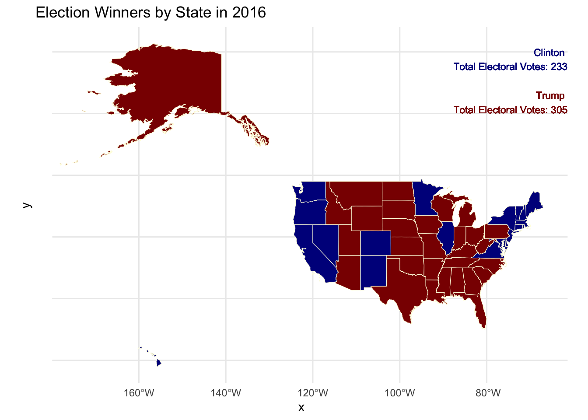
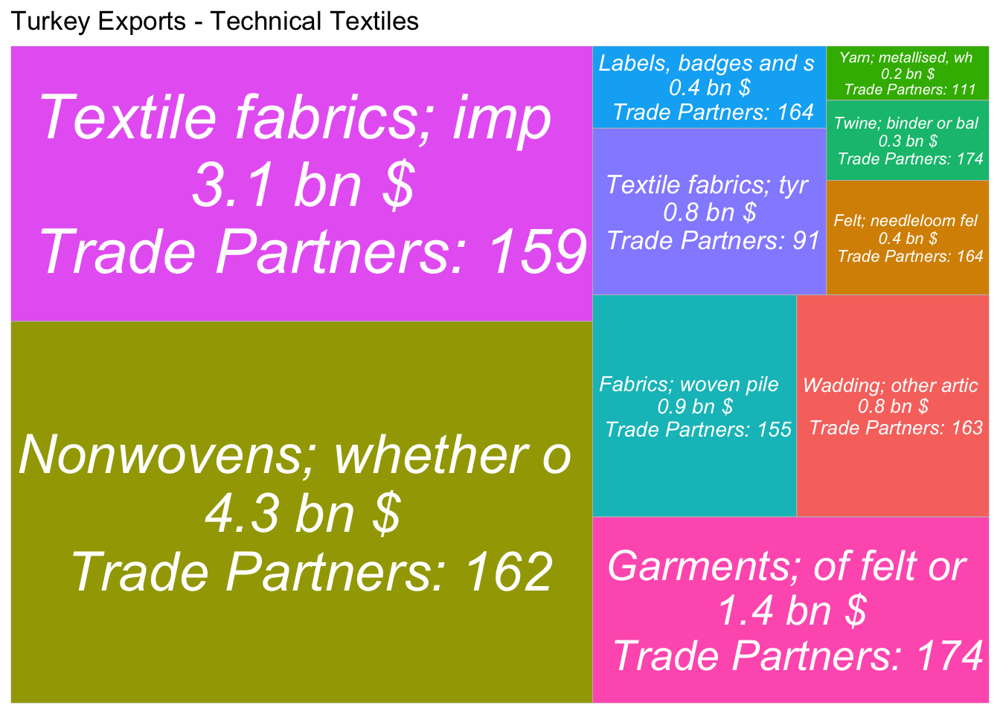
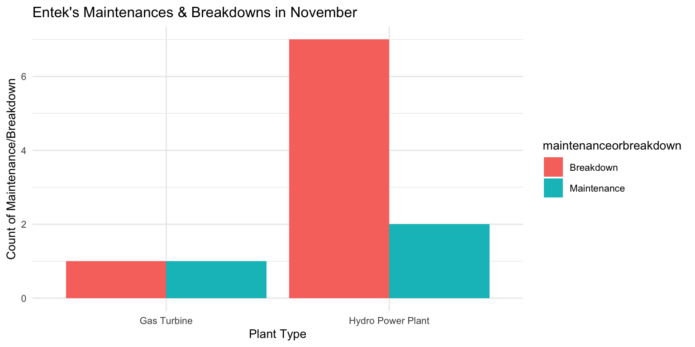
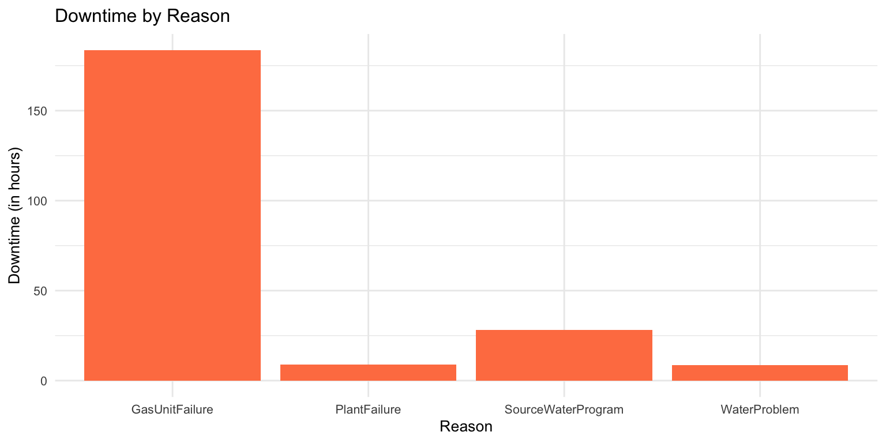
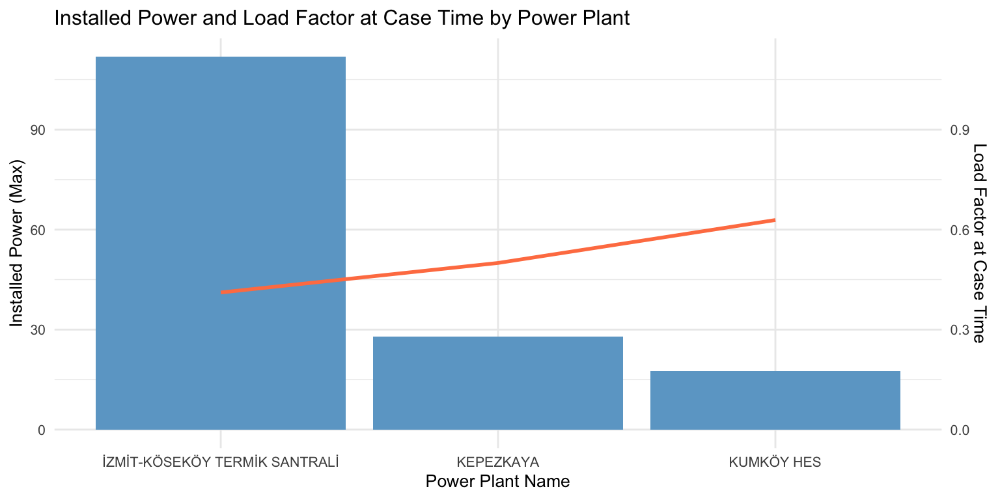

Code
library(dslabs)
library(ggplot2)
library(dplyr)
library(sf) # for spatial dataI agree that unregulated AI poses ethical and security risks, necessitating regulations for societal trust. However, AI has societal impacts and has revolutionized various sectors. Strict regulations may also hinder innovation, but a balance is needed. As OpenAI leaders suggest, regulation is needed to allow development below a certain capability threshold. Regulations should not disadvantage small players. There is also a need for an international regulator body. I’ve found a proposal interesting, which is published in Lords Library UK, suggesting an AI lab established to research and test safe AI, avoiding harm to progress and launching major AI-talent programs. They also propose remodeling data as a public asset, needing thoughtful consideration.
This map illustrates the outcome of the U.S. presidential election on a state-by-state basis. The shading indicates the election winners, with darker blue representing states won by Hillary Clinton and darker red representing states won by Donald Trump.
The official results on election night initially showed Trump securing 306 electoral votes, while Clinton obtained 232. However, based on the data provided here, Trump received 305 electoral votes, and Clinton received 232. The discrepancy arises from the allocation of Maine’s electoral votes, where 4 votes were calculated for Clinton in this database. In reality, Maine awarded 3 electoral votes to Clinton and 1 to Trump, as the state allocates electoral votes proportionally by congressional district.
The final official results account for seven faithless electors, five Democratic and two Republican, resulting in Trump receiving a total of 304 electoral votes and Clinton 227.
library(dslabs)
library(ggplot2)
library(dplyr)
library(sf) # for spatial data# Define Database
data <- results_us_election_2016
#US states map is downloaded from ArcGIS Hub (51 states)
states <- st_read("shapefile.geojson") Reading layer `States_shapefile' from data source
`/Users/sezgi/Documents/GitHub/mef07-sezgia/shapefile.geojson'
using driver `GeoJSON'
Simple feature collection with 51 features and 6 fields
Geometry type: MULTIPOLYGON
Dimension: XY
Bounding box: xmin: -178.2176 ymin: 18.92179 xmax: -66.96927 ymax: 71.40624
Geodetic CRS: WGS 84#Match the column names and input data of states in main datafile and shapefile
colnames(data)[colnames(data) == "state"] <- "State_Name"
states$State_Name <- tolower(states$State_Name)
data$State_Name <- tolower(data$State_Name)
#Merge the main datafile and shapefile
merged_data <- merge(states, data, by.x = "State_Name", by.y = "State_Name")
#Define winners
merged_data$winner <- ifelse(merged_data$clinton > merged_data$trump
&merged_data$clinton > merged_data$others, "Clinton",
ifelse(merged_data$trump > merged_data$clinton
&merged_data$trump > merged_data$others, "Trump", "Others"))
# Calculate the sum of electoral votes for each winner
sum_votes <- merged_data %>%
group_by(winner) %>%
mutate(total_electoral_votes = sum(electoral_votes))
# Plot the map using ggplot
ggplot() +
geom_sf(data = merged_data, aes(fill = winner), color = "lightyellow", lwd = 0.2) +
scale_fill_manual(name = "Winner", values = c("Clinton" = "darkblue",
"Trump" = "darkred", "Others" = "lightyellow")) +
theme_minimal() +
ggtitle("Election Winners by State in 2016") +
labs(fill = "Winner") +
geom_text(data = sum_votes %>% filter(winner %in% c("Clinton", "Trump")),
aes(label = paste(winner, "\nTotal Electoral Votes:", total_electoral_votes),
x = Inf, y = Inf, color = winner),
size = 3, hjust = 1, vjust = ifelse(sum_votes$winner == "Clinton", 2,4)) +
scale_color_manual(values = c("Clinton" = "darkblue", "Trump" = "darkred")) +
theme(legend.position = "none")
Purpose: The purpose of this analysis is to examine the textile sector, evaluate the degree of value addition of the commodities listed under this industry and develop strategic recommendations.
Method: Technical textiles, which are high value-added products requiring advanced technology, are rapidly gaining prominence over traditional textiles in Turkey. I have collected commodity codes of technical textiles from a research study and filtered in this database to illustrate some selected technical textile product types’ revenue performance and their count of trade partners.
Key Findings: Major revenue streams among textile commodities are cottons, yarns and fibers which are non-processed raw materials. Turkey should diversify these sources and focuse more on technical textiles. The presented illustration details Turkey’s existing export commodities of technical textiles, suggesting areas for expanding trade and revenue. Significant among these are textile fabrics treated with plastics, processed nonwovens, labels, badges, and various textile articles, alongside garments.
# Load Datasets
loaded_datasets <- readRDS("wits_data.rds")
read_wits_turkey_data_only <-
loaded_datasets$wits_turkey_data_only
read_wits_turkey_data_with_partners <- loaded_datasets$wits_turkey_data_with_partners# Define dataset
textile_data <- read_wits_turkey_data_with_partners
# Filter for section code 11
textile_data <- textile_data %>%
filter(section_code == 11) #Code11 is textile
# Extract the first four digits of each commodity code
textile_data$commodity_code_3d <- substr(textile_data$commodity_code, 1, 4)
# Extract the first 20 letters of commodity name
textile_data$commodity_name_short <- substr(textile_data$commodity_name, 1, 20)
# Count unique partners for each commodity code
partner_count <- textile_data %>%
group_by(commodity_code_3d) %>%
summarize(partner_count = n_distinct(partner_name))
# Aggregate trade_value_usd_imp and get short commodity names for each commodity code
trade_values <- textile_data %>%
group_by(commodity_code_3d) %>%
summarize(trade_value_usd_exp = sum(trade_value_usd_imp/1e9, na.rm = TRUE),
commodity_name_short = first(commodity_name_short)) # Use shortened name
# Merging partner_count with trade_values
merged_data <- merge(trade_values, partner_count, by = "commodity_code_3d")
# Select technical textile commodity types based on trade_value_usd_exp
selected_commodities <- merged_data %>%
filter(commodity_code_3d %in% c( "5601", "5602", "5603","5605","5607",
"5806","5807","5902","5903","6210"))
# Create a treemap
ggplot(selected_commodities, aes(area = trade_value_usd_exp, fill = commodity_code_3d,
label = paste(commodity_name_short, "\n", round(trade_value_usd_exp,1),
"bn $", "\n Trade Partners:", partner_count))) +
geom_treemap() +
geom_treemap_text(fontface = "italic", colour = "white", place = "centre", grow = TRUE) +
theme(legend.position = "none") +
ggtitle("Turkey Exports - Technical Textiles")
Purpose: This analysis aims to review the frequency of maintenance and breakdowns at Entek Electricity Generation Company’s power plants in November. It will categorize these incidents by plant type and cause, assess downtime duration and evaluate the capacity load factor and installed power at the time of each case.
Method: Maintenance & Breakdown data files are combined manually in Excel file before creating the RData file.
Project Database: RData Link
Key Findings:
In November, Entek encountered 7 breakdowns and 1 maintenance-related downtime across their power plants. Specifically, its gas turbine in İzmit experienced 2 downtimes – one due to maintenance and the other a breakdown.
The most significant downtime occurred due to a gas turbine failure, while other instances were primarily linked to issues with the source water program.
Regarding capacity load factors, the Kumköy hydroplant was the most impacted during downtime, showing the highest reduction in utilization. This was followed closely by the Kepezkaya hydro power plant and the Gas Turbine in İzmit.
library(readxl)
library(dplyr)
library(tidyverse)
# Read Excel file
epias_data_file <- readxl::read_excel("./epiasdata.xlsx")
# Save the data as RData
save(epias_data_file, file = "epiasDB.RData")
getwd()[1] "/Users/sezgi/Documents/GitHub/mef07-sezgia"library(dplyr)
library(lubridate)
library(ggplot2)# Load the data from RData file
load("epiasDB.RData")
power_data <- epias_data_file
#Change column names
colnames(power_data) <- c("orgName", "powerPlantName", "relatedUnit_uevcb",
"caseStartDate", "caseEndDate", "installedPower",
"capacityatCaseTime","reason", "maintenanceorbreakdown")
# Filter for ENTEK ELEKTRİK ÜRETİMİ A.Ş.
entek_data <- filter(power_data, orgName == "ENTEK ELEKTRİK ÜRETİMİ A.Ş.")
# Create the new column 'plantType'
entek_data <- entek_data %>%
mutate(plantType = case_when(
grepl("HES", relatedUnit_uevcb) ~ "Hydro Power Plant",
grepl("TERMİK SANTRAL", relatedUnit_uevcb) ~ "Gas Turbine",
TRUE ~ NA_character_
))
# Change column names
entek_data <- entek_data %>%
mutate(
reason= case_when(
str_detect(reason, "^MEMBA") ~ "PlantFailure",
str_detect(reason, "^SANTRAL") ~ "PlantFailure",
str_detect(reason, "^gelen su azalışı") ~ "WaterProblem",
str_detect(reason, "^memba santrali programı") ~ "SourceWaterProgram",
str_detect(reason, "^GT3") ~ "GasUnitFailure",
str_detect(reason, "^KEPEZKAYA") ~ "ScheduledMaintenance",
str_detect(reason, "^DAMLAPINAR") ~ "ScheduledMaintenance",
str_detect(reason, "^Memba") ~ "SourceWaterProgram",
TRUE ~ as.character(reason)
)
)
# Convert caseStartDate and caseEndDate to datetime objects
entek_data$caseStartDate <- ymd_hms(entek_data$caseStartDate, truncated = 3)
entek_data$caseEndDate <- ymd_hms(entek_data$caseEndDate, truncated = 3)
# Extract date and time components and add them as new columns
entek_data <- entek_data %>%
mutate(
start_date = as.Date(caseStartDate),
end_date = as.Date(caseEndDate),
start_time = ifelse(!is.na(caseStartDate), format(caseStartDate, "%H:%M:%S"), NA),
end_time = ifelse(!is.na(caseEndDate), format(caseEndDate, "%H:%M:%S"), NA)
)
# Convert start_time and end_time to POSIXct
entek_data$start_time <- as.POSIXct(paste(entek_data$start_date, entek_data$start_time))
entek_data$end_time <- as.POSIXct(paste(entek_data$end_date, entek_data$end_time))
# Calculate the time difference and convert it to a period (duration)
entek_data <- entek_data %>%
mutate(time_difference = difftime(end_time, start_time, units = "hours"))
entek_data$time_difference_numeric <- as.numeric(entek_data$time_difference,
units = "hours")
# Add a new column showing loadfactoratCasetime
entek_data <- entek_data %>%
mutate(loadfactoratCaseTime = entek_data$capacityatCaseTime/entek_data$installedPower)
ggplot(entek_data, aes(x = plantType, fill = maintenanceorbreakdown)) +
geom_histogram(stat = "count", position = "dodge") +
labs(x = "Plant Type", y = "Count of Maintenance/Breakdown") +
ggtitle("Entek's Maintenances & Breakdowns in November") +
theme_minimal() +
theme(text = element_text(size = 10))
# Filter data according to capacity at case time and summarize
filtered_data_td <- entek_data %>%
filter(capacityatCaseTime != 0) %>%
group_by(reason) %>%
summarize(time_difference_numeric_total = sum(time_difference_numeric))
# Plot
ggplot(filtered_data_td, aes(x = reason, y = time_difference_numeric_total)) +
geom_bar(stat = "identity", fill = "coral") +
labs(x = "Reason", y = "Downtime (in hours)") +
ggtitle("Downtime by Reason")+
theme_minimal()+
theme(text = element_text(size = 10))
# Filter data and summarize
filtered_data_pp <- entek_data %>%
filter(capacityatCaseTime != 0, maintenanceorbreakdown == "Breakdown") %>%
group_by(powerPlantName) %>%
summarize(installed_Power = max(installedPower),load_factor = max(loadfactoratCaseTime), .groups = "drop")
#Plot
ggplot(filtered_data_pp, aes(x = powerPlantName)) +
# Bar plot for installedPower
geom_bar(aes(y = installed_Power), stat = "identity", fill = "skyblue3") +
# Line plot for loadfactoratCaseTime
geom_line(aes(y = load_factor * 100, group = 1), color = "coral", size = 1) +
# Secondary axis for loadfactoratCaseTime
scale_y_continuous(sec.axis = sec_axis(~ . / 100, name = "Load Factor at Case Time")) +
labs(x = "Power Plant Name", y = "Installed Power (Max)") +
theme_minimal() +
ggtitle("Installed Power and Load Factor at Case Time by Power Plant")+
theme(text = element_text(size = 10))